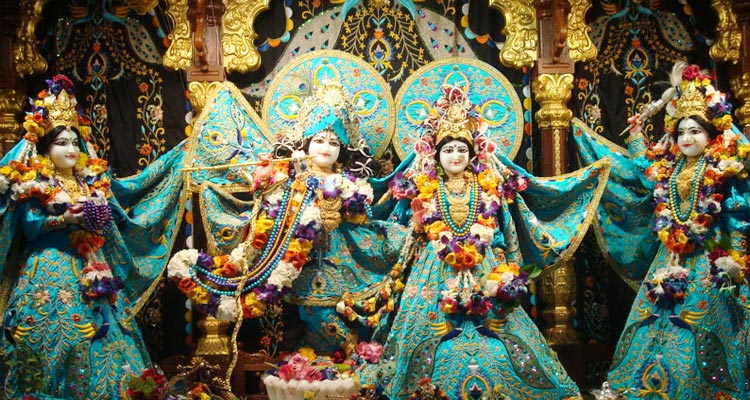
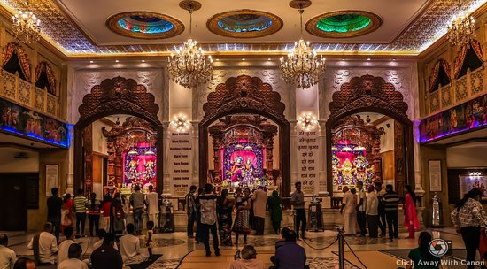
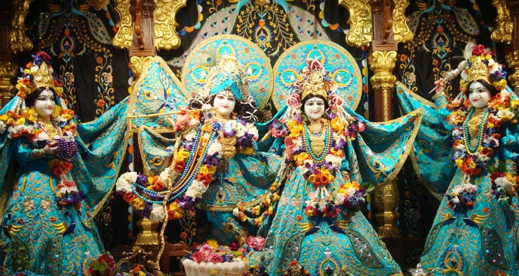
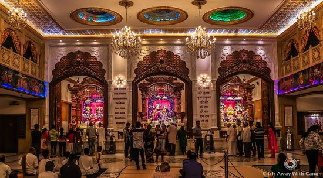

Officially known as the Shree Siddhivinayak Ganapati Mandir, this temple was originally built back in 1801. It's one of the wealthiest temples in Mumbai, and it’s not uncommon to hear of Bollywood stars stopping to pray here. The temple also houses a shrine to Hanuman with an idol that was unearthed during a local road extension project .The Dignity and Importance of Lord Shree Siddhivinayak
Shree Siddhivinayak Ganpati temple of Prabhadevi Mumbai is an ancient famous shrine. This was constructed around the core shrine on 19th November 1801. Those days the locality had ample of shrubbery and innumerous coconut trees. The Shree Siddhivinayak idol comprises of black stone and is 2.5 ft. high from its base and approx. 2 ft. wide. The idol having Trunk tilted on the right, Lotus in the upper right arm, Parshu – the small hatchet in the second arm, Lower right arm is having a Japmala – the chain of holy beads, while left arm is having Ladoo Vati – the bowl having favourite sweet-delicacy of Lord Ganesh. The idol is three – eyed like Lord Shiva and is carved on the black stone housing having Mooshak – the mouse carrier of the Lord. The Lord Shree is seating on the throne base in Padmaasan – the lotus posture. Lord Ganesh more popularly called Ganapati- meaning the Chief of the Ganas is assuming Nar-KunjaRoop – the elephant headed form, and being accompanied by Riddhi and Siddhi – the Goddesses of affluency and prosperity is called Mahaganpati. To make a special mention, the idol is Sanjeevan meaning resuscitative. Shree Siddhivinayak holds a serpent like Yadnyopavit – the sacred thread in the neck. The goddesses – Riddhi and Siddhi of affluency and prosperity are standing by his sides. The whole idols is coated with saffron coloured enamels and adorning the golden crown. The Goddesses – Riddhi, Siddhi are wearing green sarees.
Label : Must Visit
Timings : 05:30 AM - 10:00 PM
Time Required : 1 - 2 hours
Entry Fee : No entry fee
Mahalakhmi Temple

The Mahalaxmi Temple in Mumbai is one of the oldest temples situated in the city. Located on the Bhulabai Desai Road in Mahalaxmi West, it is dedicated to Goddess Mahalaxmi or the 'Goddess of Wealth'. The temple was built sometime around the 16th - 17th century and the main presiding deity here is Goddess Laxmi, while Goddess Kali and Saraswati are other two deities worshipped here. Together, the three idols are known as Mahalaxmi, Mahakali and Mahasaraswati.The edifice of the Mahalaxmi Temple is simple and charming in its appearance, which is an apt reflection of the very serene and calm atmosphere that prevails inside. The idols of the Goddesses here are adorned with gold bangles, pearl necklaces and nose rings, with Mahalaxmi occupying the central position. You will find several shops to buy the necessary items required for the puja and these stalls serve as a great help for those visiting the temple for the first time. Considered to be a sacred temple in Mumbai, it is always flocked with devotees from all over the country..
Timings : 6:00 AM - 10:00 PM
Time Required : 1-2 hours
Entry Fee : Free
Isckon Temple
 



ISCKON Temple is a divine and spiritual getaway from all the hustle and bustle of the capital city of Mumbai. Dedicated to Lord Krishna who is considered as the eighth avatar of Lord Vishnu, the temple is clad in marble and glass. Meters away from the Juhu Beach, incorporating Iskcon Temple in your weekend plans might just be the perfect peaceful escape you are looking for. This place has a tranquil feel about it and the in-house vegetarian restaurant serves exceptional food at cheap rates.The ISCKON Temple has an impressive architecture and paintings on the temple walls depict scenes from the Mahabharata. Swami Prabhupada, a devout follower of Krishna went to the United States at the age of 69 and founded Iskcon when most men look for the comfort of homes. Gates are opened at four thirty in the morning for visitors. The best time to visit ISKCON temple is early in the morning when the deities are decorated with flowers. A charged ambience with the humming of mantras from devotees during the daily morning and evening Aarti and the delicious Prasad served just after is a must during a visit to this place.
Label : Must Visit
Timings : 4:30 AM - 8:30 PM
Time Required : 3 hours
Time Required : 3 hours
Shri Swaminarayana Mandir

The Shri Swaminarayan Mandir in Mumbai is part of the Swaminarayan Sampraday of idol worship and the belief that Sri Krishna Purushottam Narayan is the supreme being. The Temple in Mumbai has raised demand for festival offerings in the area thereby aiding the local economy.
This temple has been a part of Mumbai since 1868. RanchhoddasPranjeevandas, a pious man demolished and re-built his own residence to create a temple. He installed three deities namely Hari Krishna Maharaj, Radhika, and Gaulokvihari.
Later, in 1903, the current structure of the temple was built and two more deities were included namely Lakshminarayan Dev and Ghanshyam Maharaj.
Best Time To Visit Shri Swaminarayan Mandir
Mangla Aarti – 6 am
Darshan Badh – 6:30 – 7:45 am
Shangar Aarti- 7:45 am
Darshan Badh – 10:30 – 11 am
Rajbhog Aarti – 11 am
Darshan Badh – 12 pm
Uthapan Darshan – 4 pm
Sandhya Aarti – 7 pm
Darshan Bandh – 7:45 pm
Shayan Aarti – 9 pm
Darshan Bandh – 9:15 pm